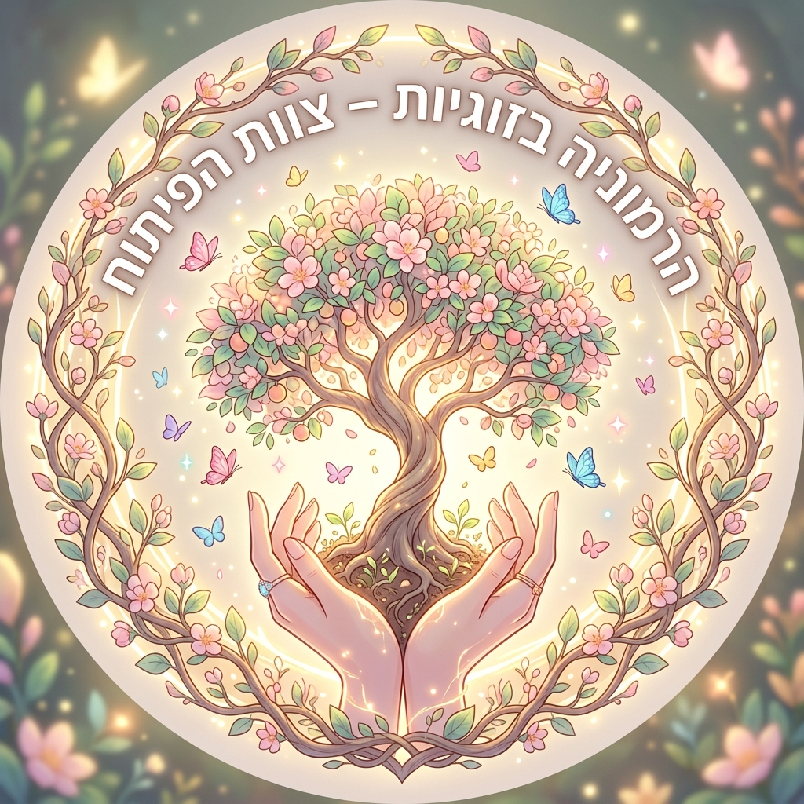
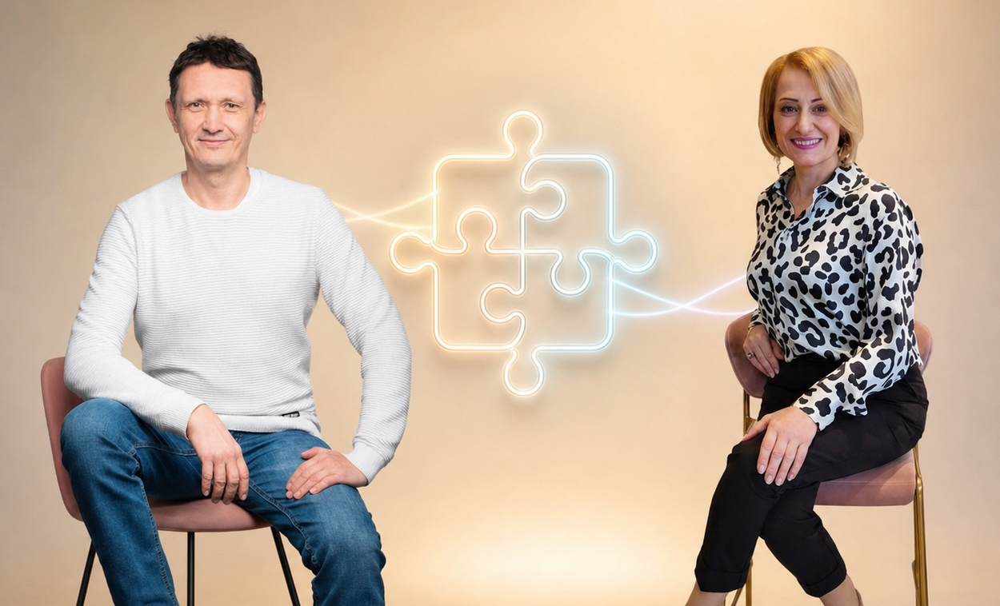
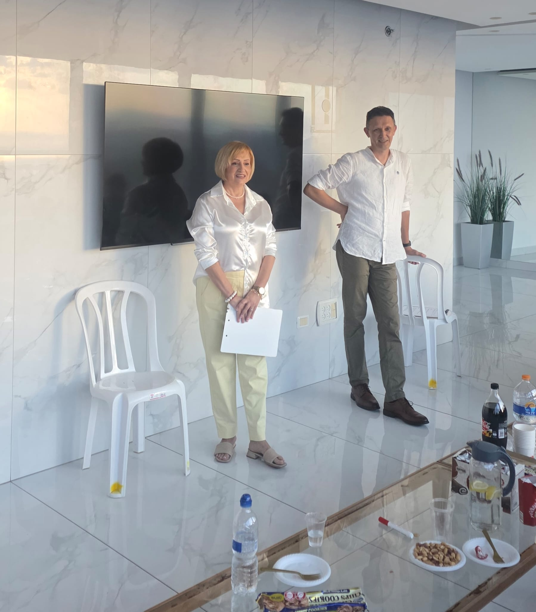

כרמיאל
את המקום המדויק נפרסם יחד עם התאריך.

קרן ואלכסייסדנה · שעתיים · כרמיאל
ארבע סצנות מוכרות מהחיים. ארבע דרכים שבהן אנחנו מאבדים את עצמנו בתוך הקשר, ובכל פעם מתוך אהבה. ואחרי כל סצנה, טייק שני: אותו מצב, בלי לבטל את עצמנו.

פרטים
את המקום המדויק נפרסם יחד עם התאריך.
שעתיים: 45 דקות, הפסקה של רבע שעה, ועוד 45 דקות.
את התאריך נפרסם קודם כול בקבוצת ה-WhatsApp שלנו.
כניסה ישירה לקבוצת WhatsAppהרעיון
יחסים לא בונים פעם אחת. בונים אותם כל יום: עם בן הזוג, עם הילדים הבוגרים, עם הנכדים. גם אחרי ארבעים שנה.
בקשר קרוב מוותרים. זה טבעי. ויתור הוא כשיודעים מה חשוב לנו, ובוחרים לוותר הפעם. התבטלות היא כשאותנו כבר אין בהחלטה.
לפעמים זה קורה בשקט: "לא קשה לי", "הכול בסדר", "טוב, לא אלך". ולפעמים דווקא בוויכוח, כשחשוב לנו לנצח יותר מאשר להבין.
בסדנה נבחין ברגע הזה. השאלה שנחזור אליה: יש אותי בהחלטה הזאת?
ארבע הסצנות
הסצנות לקוחות מהחיים שאחרי שהילדים גדלו: ילדים בוגרים, נכדים, בן זוג שיצא לפנסיה.
"לא קשה לי"
הבן כבר בדלת, ואמא מגיעה עם שקית מלאה בקופסאות אוכל. הוא מבקש פשוט לשבת יחד. היא שומעת שהאוכל שלה כבר לא נחוץ.
"טוב, לא אלך"
חודש בפנסיה, והוא כבר סידר מחדש את המטבח שלה. אף אחד לא אסר עליה לצאת להליכה עם חברה. היא ביטלה בעצמה.
"הכול בסדר"
ארבעים שנה הוא משאיר את הכוס על השולחן. ארבעים שנה היא מפנה אותה בשקט. ואז, בגלל כוס אחת, הכול מתפרץ.
"אני יודעת יותר טוב"
שוקולד לנכדים, בקשה של הבן, ויכוח שהיא מנצחת בו. ובשבת הבאה, הבית שקט.
איך זה עובד
קרן ואלכסיי משחקים את הסצנה כמו שהיא קורה באמת. בסוף שומעים גם את הקול הפנימי של כל אחד.
מה קרה? מה כל אחד באמת רצה? באיזה רגע מישהו נעלם? איזו מחשבה הפעילה את זה? בלי לחפש אשמים.
זו לא דוגמה לאיך צריך. רק הוכחה שהייתה בחירה.
יוצאים עם דף עזר: ארבע הדרכים, ארבע השאלות ושאלה אחת לשבוע הקרוב.
חשוב לדעת

מי אנחנו
קרן מביאה נקודת מבט על הקשר בין בני זוג, על צרכים ועל המרחב המשותף. אלכסיי מביא גישה מערכתית לזיהוי דפוסי תגובה ואמונות חוסמות. יחד אנחנו מחברים שתי נקודות מבט על מה שקורה בתוך הקשר.
באוקטובר נפגשנו עם נשים ב-WIZO נהריה ובנעמת כרמיאל. הסצנות מהחיים עוררו את השיחה הכי חיה, ומהן נולדה הסדנה הזאת.
הצעד הבא
את התאריך והמקום המדויק נפרסם בקבוצת ה-WhatsApp שלנו. אפשר גם לספר לנו בטופס מה מעניין אתכם בזוגיות, או לכתוב לאלכסיי דרך Gmail בדפדפן.